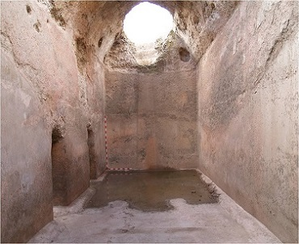

|
ZAMORA ROMANA
Poblada desde la antigüedad, de sus restos destacamos: - En Camarzana de Tera se localizan los restos de una villa tardorromana. La Villa romana de Orpheus es un asentamiento de gran interés histórico y monumental que forma parte del sistema de villas romanas que colonizó el valle del Duero. Los pavimentos de mosaico, son de figuras de época tardo-romana, entre los siglos II y IV, según los arqueólogos, cuenta con un total de 15 habitaciones articuladas en torno a un peristilo o patio porticado, con una estancia destacada, posiblemente un triclinium, con un mosaico figurado con un emblema central en el que se representa a Orfeo rodeado de animales y a su alrededor ocho cartelas con representaciones de caballos y su nombre epigrafiado con teselas y escenas de caza. No se han encontrado monedas o cerámicas, así que es probable que la villa se fuera abandonando progresivamente. Ver fotos: Flickr.
- La necrópolis tardorromana de Vilacorta en Vadilla de Guareña. - Se han hallado Dolmenes en El Casetón de los Moros, en Morales del Rey y en Granucillo. - El campamento romano de Petavonium. - Las cisternas romanas y el castro de Teso de la Mora en Molacillos, datadas entre finales del siglo I a.e.c. y principios del siglo I. Foto: Servicio Territorial Cultura de Zamora.
 - En Villalazan se halla el asentamiento romano que data del siglo I-II a.e.c. al V. La zona arqueológica de Valcuervo con Los Castros y El Alba. Destacan los restos al campamento romano de Albocela o Albocella, siglo I a.e.c - III, que podrían corresponderse según algunos estudiosos a la antigua mansio y civitas de Ocelo Durii. - Toro era conocida por los fenicios. Destaca el verraco de Arbocala de la tribu de los vacceos y los restos del puente romano. - En Villardiegua de la Ribera el yacimiento prerromano
rodea todo el cerro y se encuentra en un óptimo estado de conservación, destaca
la muralla, que tiene al menos dos metros de altura y 4,5 de
ancho. También destaca la Mula, un verraco traído del cercano poblado de San Mamed. Se encuentra situado a unos 5 km, aproximadamente, al oeste del casco
urbano y en lo alto de un cerro que, a su vez, se encuentra coronado por un bolo
granítico que ha dado nombre al paraje. Se han hallado numerosas estelas
romanas. En el citado paraje han sido encontrados restos prerromanos, romanos y
visigodos.
|